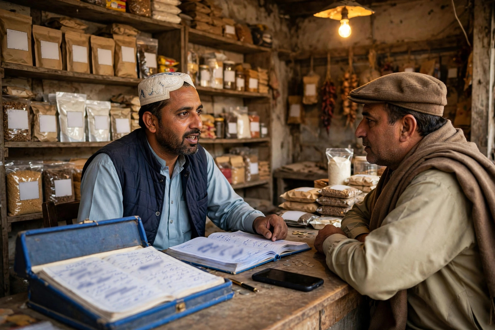

A trader in Chobara knows his regular customers by face. The risk is depending only on them. New families move in, villagers come to town for market day, and younger buyers check their phones before they check the bazaar. If your shop is invisible on Google, those buyers go to whichever competitor they find first, even if your prices and stock are better.
SEO for a shop does not mean complicated technology. It means making sure Google understands what you sell, where you are, and how to contact you, and then proving it with a clear profile and a simple website. Support is available through our SEO services for Chobara page. Please note that Zaheer Seo Expert is based in Layyah and serves Chobara businesses from there. There is no office in Chobara, and all SEO work is done online and by phone, so distance is not a barrier.
What Customers Search Before Visiting a Shop
Shop-related searches are usually short and practical. People type the product or shop type, sometimes with Chobara added, sometimes with words like near me. Others search for a phone number to ask about stock before travelling from a nearby village. That second type of search matters a lot in an agricultural area, where a wasted trip costs time and fuel.
Your job is to match those searches with clear information. If you stock a wide range, say so in plain groups rather than listing every single item. If you offer delivery within town, credit arrangements for regular trade customers, or bulk rates for other retailers, mention the service honestly without publishing prices that change daily and would quickly become wrong online.

Your Google Profile Is Your Digital Shop Board
Think of your Google Business Profile as the board above your shop, except this board is seen on phones across the whole area. Choose the category that best fits your main trade. A general store, a cloth merchant and a building materials trader should not all pick the same vague category. Add photos of the shop front so visitors can recognise the building, and keep hours accurate on market days and holidays.
Traders who also sell to other shops should say so in the description. Wholesale and retail customers search differently, and a short line explaining that you serve both can bring enquiries you would otherwise miss. Keep the phone number consistent with the number on your signboard and any Facebook page, as explained in our general guide to SEO for Chobara businesses.
Simple Website Pages That Work for Traders
A shop website does not need dozens of pages. It needs a home page that names the shop, the town and the main goods, a page or section for each major product group, and a contact page with a map, phone number and hours. Write each page in your own words about your own shop. Copied supplier text or generic paragraphs do not help a customer decide, and they do not help Google either.
- Home page: shop name, location in Chobara, main product groups and phone number near the top.
- Product group pages: one page per major range, describing what is usually stocked and who it suits.
- About page: a short, honest history of the business and the market it serves.
- Contact page: address, directions from a known landmark, phone and opening hours.
Good on-page SEO simply means each page has a clear title, clear headings and text that answers a real customer question. Avoid stuffing the town name into every sentence. Natural writing that a neighbour would understand is the right standard.

Market Days, Seasons and Stock Updates
Trade in Chobara follows seasons. Demand rises and falls with harvests, school terms, weddings and religious festivals. Your online presence can follow the same rhythm without becoming a daily burden. Update your profile photos when stock changes in a visible way, post a short update when a major new range arrives, and correct your hours before holidays. Small, truthful updates keep the listing fresh and useful.
What you should not do is create fake offers, invented discounts or copied festival greetings with no real information. Customers in a small market remember who misled them. A plain update that helps someone plan a trip is worth more than any decoration.
Reviews From Real Buyers
For shops, reviews often mention helpful staff, fair dealing and whether the goods were as described. Invite buyers to share honest feedback and reply briefly and politely. If a complaint is genuine, respond calmly and explain what you will check. Other readers judge your character from the reply as much as from the review itself.
Never ask staff or family to post reviews pretending to be customers. In a town the size of Chobara, such practices are quickly noticed and they break Google rules as well. Slow, honest reviews from real trade are enough.
Measuring Whether It Is Working
You do not need complex reports to see progress. Notice whether more callers say they found you on Google, whether people from nearby villages mention your shop name when they arrive, and whether enquiries about specific product groups are increasing. Your Google profile also shows basic counts of views, calls and direction requests. Review those numbers every month or two alongside your own observations, and fix the basics first whenever something drops: hours, phone number and photos are the usual causes.
SEO will not replace good stock, fair prices or respectful dealing, and any honest provider will tell you that. What it does is make sure the reputation you have already earned in the bazaar is visible to the growing number of buyers who start their shopping on a phone.
Frequently Asked Questions
Do small shops in Chobara really get customers from Google?
Yes, many customers check Google for a phone number, location or opening hours before visiting, even in a small town. A complete listing makes it easy for them to choose your shop.
What should a trader put on a website first?
Start with what you sell, the main product groups, your market location, phone number and opening hours. Clear basic pages help more than a large site full of copied text.
Is a Facebook page enough for a Chobara shop?
Facebook helps with regular customers, but Google is where new customers search when they need something now. Most shops benefit from having both, with the same name and phone number.
Where is Zaheer Seo Expert based?
Zaheer Seo Expert is based in Layyah and has no office in Chobara. Chobara shops are served from Layyah, with SEO work done online and by phone.
Want More Customers From Google?
Call 0327 7350830 or email seozaheer14@gmail.com. Zaheer Seo Expert, Layyah - Rajan Shah Road, Rana Nagar, Chak 116 TDA, Pakistan. Open 24 hours.
Get Your SEO Strategy →